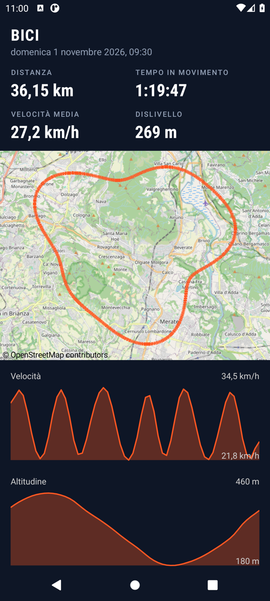

Screenshot
L'app in uso

Le tue attività 
In registrazione 
Dettaglio dell'attività
Funzioni
Tutto quello che serve
Registrazione a schermo spento
Servizio GPS in primo piano: la corsa non si interrompe quando blocchi il telefono. Ogni punto è salvato subito.
Notifica dal vivo
Tempo, distanza e media sempre visibili, con Pausa e Riprendi senza sbloccare il telefono.
Mappa del percorso
Il tracciato su mappa OpenStreetMap.
Passo, velocità e dislivello
Passo o velocità, tempo, distanza e dislivello.
Tempi km per km
Ogni chilometro con la sua barra, per vedere dove hai spinto.
Grafici
Andamento di passo e altitudine lungo il percorso.
Statistiche
Totali della settimana, del mese, dell'anno e di sempre, separati per corsa e bici.
Record personali
Distanza più lunga, miglior passo o velocità media, km più veloce. Un tocco apre l'attività.
Esporta e importa GPX
Anche le attività da Strava.
Backup completo
Backup e ripristino di tutto in un file ZIP.
Aggiornamenti dall'app
Nuove versioni direttamente dall'app.
Privacy
I tuoi dati restano sul tuo telefono
Nessun account
Non devi registrarti e non esiste un server di Offtrack.
Solo sul telefono
Le uscite restano nella memoria interna del telefono, escluse dal backup cloud di Google.
Nessun tracciamento
Nessuna libreria di tracciamento e nessun Google Play Services. Il GPS registra solo mentre sei in registrazione.
Quando usa la rete
- Mappa OpenStreetMap: i riquadri vengono scaricati quando apri il dettaglio di un'uscita. Le miniature nella lista sono disegnate in locale.
- Aggiornamenti: controllo su GitHub al massimo una volta al giorno, disattivabile dal menu.
Installazione
Pronta in quattro passi
- Scarica
offtrack.apkdal pulsante Scarica l'APK. - Aprilo e consenti al browser o al gestore file di installare app sconosciute.
- Alla prima registrazione concedi posizione precisa e notifiche.
- Gli aggiornamenti successivi compaiono nell'app come scheda "Aggiornamento disponibile". La prima volta Android chiede di consentire a Offtrack di installare app.
Batteria: alla prima registrazione Offtrack chiede di essere esclusa dall'ottimizzazione batteria. Accetta: su Xiaomi, Huawei, Samsung e simili evita che le uscite lunghe si interrompano. Puoi farlo anche dopo, dal menu "Ottimizzazione batteria".
FAQ
Domande frequenti
Perché non è sul Play Store?
Offtrack è gratuita e non richiede un account sviluppatore: si scarica da GitHub e ogni versione è firmata con la stessa chiave.
Funziona su iPhone?
No, solo Android: iOS non permette il GPS in background alle web app.
Posso portare le mie attività da Strava?
Sì: esporta da Strava i file GPX e importali dal menu "Importa GPX", oppure apri il file e scegli Offtrack in "Apri con".
Cosa succede se cambio telefono?
Usa "Esporta backup" sul vecchio telefono e poi "Importa backup" sul nuovo.
Android dice che l'app potrebbe essere pericolosa. È normale?
Sì: Android lo dice per ogni app installata fuori dal Play Store. Offtrack non chiede account e non ha tracciamento, e il codice è pubblico. Se Play Protect chiede una scansione puoi accettare.
Come verifico che l'APK sia autentico?
Ogni versione è firmata con la stessa chiave. L'impronta SHA-256 del certificato è D5:6A:12:05:36:18:9F:80:C9:20:FE:44:7F:3C:06:B3:1F:7F:84:AC:9E:F8:2A:54:0B:3E:C6:D8:D0:9A:81:06. Puoi controllarla con apksigner verify --print-certs offtrack.apk. Android stesso rifiuta un aggiornamento firmato con un'altra chiave.
La registrazione si è fermata da sola. Perché?
Quasi sempre è il risparmio batteria del telefono. Dal menu scegli "Ottimizzazione batteria" e consenti a Offtrack di funzionare senza limitazioni. Su Xiaomi controlla anche "Avvio automatico" nelle impostazioni dell'app. I punti registrati fino a quel momento restano salvati.
Quanto è precisa l'altitudine?
Viene dal GPS: la forma della salita è affidabile, il valore assoluto può scostarsi di qualche decina di metri.